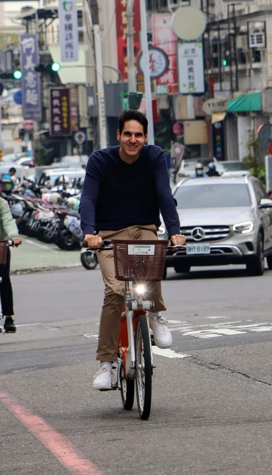

About Me: Luca Jost
Welcome! I'm Luca Jost, the founder of Control and Telemetry Systems. My passion for electronics and technology drives everything I do here. My journey has been one of continuous learning and hands-on project work.
My journey in engineering has taken me across the globe. After gaining valuable experience at Sensirion in Switzerland, I moved to New Zealand to contribute to the exciting field of space exploration at Rocket Lab. Now based in South Korea, my core passions remain space and electronics, and I thrive on the challenge of developing innovative solutions.
Control and Telemetry Systems began as a hobby project five years ago, initially focused on building a fully customizable open-source flight computer, named Vega, for amateur rockets designed to reach altitudes up to 30 kilometers. Since its inception, Vega has achieved remarkable success.
To date, Vega flight computers have flown successfully hundreds of times and have been supplied to people worldwide. Notably, Vega was selected as the official tracking and logging system for the biggest rocketry challenge in Europe (EuRoC) since 2023.
EuRoC, held annually in Portugal, brings together 25 student teams from across Europe to compete. Every rocket launched at EuRoC is equipped with a Vega flight computer, ensuring standardized apogee reporting and reliable rocket tracking. Teams also utilize Vega's capabilities to implement mechanisms like airbrakes for precise altitude control.
Core Expertise
My expertise spans the full lifecycle of embedded systems development:
- Hardware Design: I'm proficient in designing complex, mixed-signal PCBs for demanding applications using tools like Altium Designer. My experience covers microcontrollers, sensors, RF communication, power management, and high-power circuitry.
- Firmware Engineering: I develop robust and efficient firmware in C/C++ for bare-metal and RTOS environments. My expertise includes low-level drivers (I2C, SPI, UART, CAN, LIN), control algorithms, sensor fusion (Kalman filters), and adhering to standards like MISRA/AUTOSAR.
- System Engineering: Experienced in requirement engineering, system architecture, testing, and validation, particularly within the aerospace and automotive sectors.
- Prototyping & Manufacturing: Capable of managing the transition from design to production, including component sourcing and small-batch manufacturing coordination.
Industry Experience Highlights
I've had the opportunity to contribute to and lead projects across various demanding industries:
- Aerospace (Rocket Lab): I held the primary responsibility of Technical Lead for the Electrical Power System (EPS), responsible for its design on Rocket Lab's Neutron Launch Vehicle. A medium-lift launch vehicle capable of delivering 13 metric tons to orbit.
- Automotive & Industrial (Sensirion): I developed hardware and firmware for automotive sensors (LIN, Cortex-M0+), adhering to MISRA/AUTOSAR standards, and contributed to CI/CD processes.
- Consultancy & Product Design (Control and Telemetry Systems GmbH): I co-founded this company, based in Switzerland. Here, I specialize in designing hardware and firmware for diverse applications (often using RTOS on STM32) and manage small-batch production.
- Research & Development (IWK HSR): I designed flight computer hardware and firmware for fixed-wing UAVs, including PID stabilization and image processing algorithms (OpenCV/Python).
Technical Skills & Education
- Key Tools & Technologies: Altium Designer (Excellent), C/C++ (Excellent), Python (Advanced), Git (Excellent), NX (Advanced), RTOS, various communication protocols (CAN, LIN, SPI, I2C, UART).
- Education: Bachelor of Science in Electrical Engineering (OST, formerly HSR Rapperswil), Electronics Technician (Technische Fachschule Biel).
- Languages: Fluent in English and German (Mother tongue).